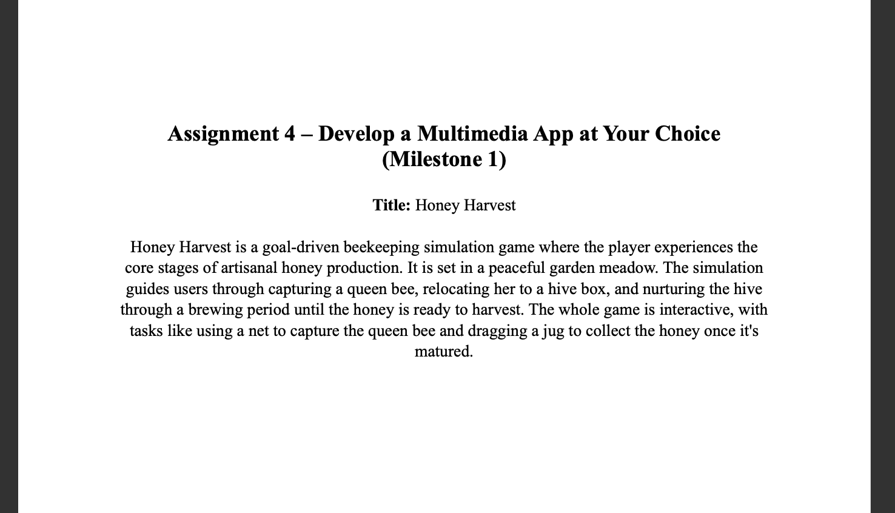
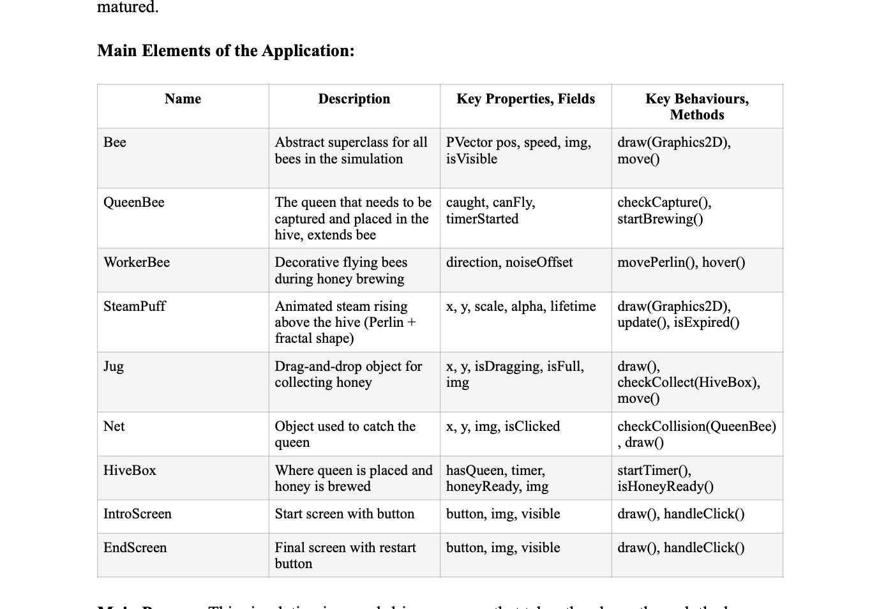
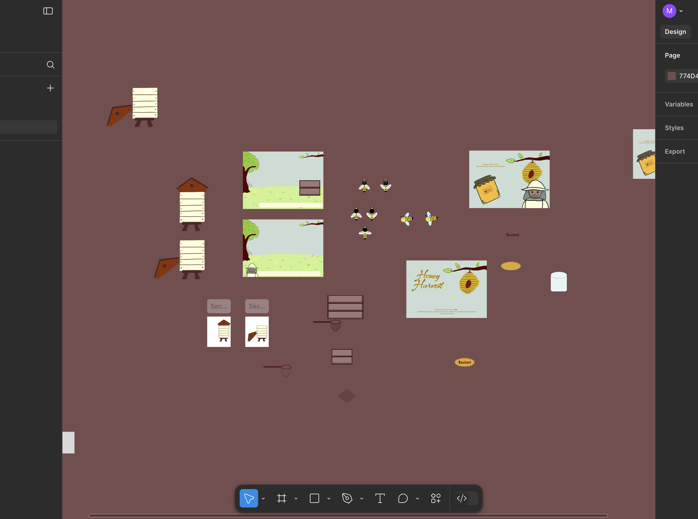
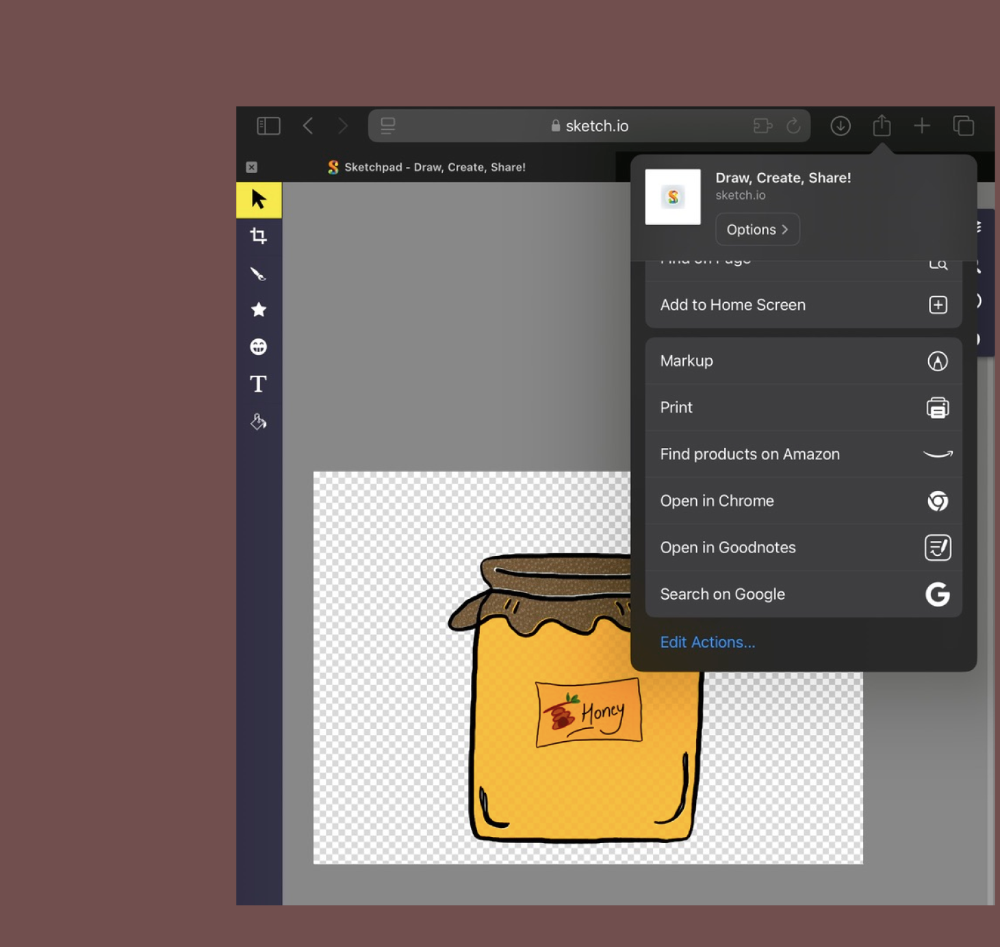
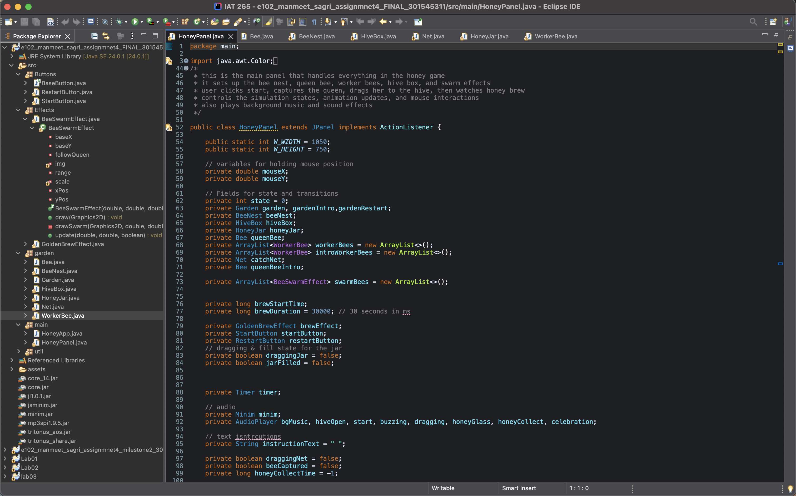
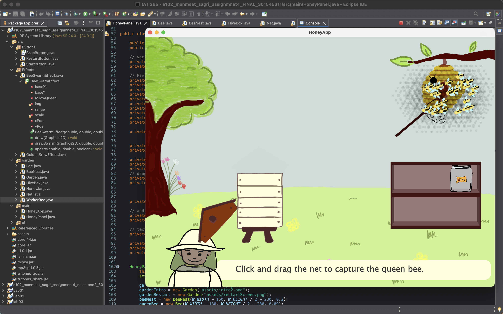
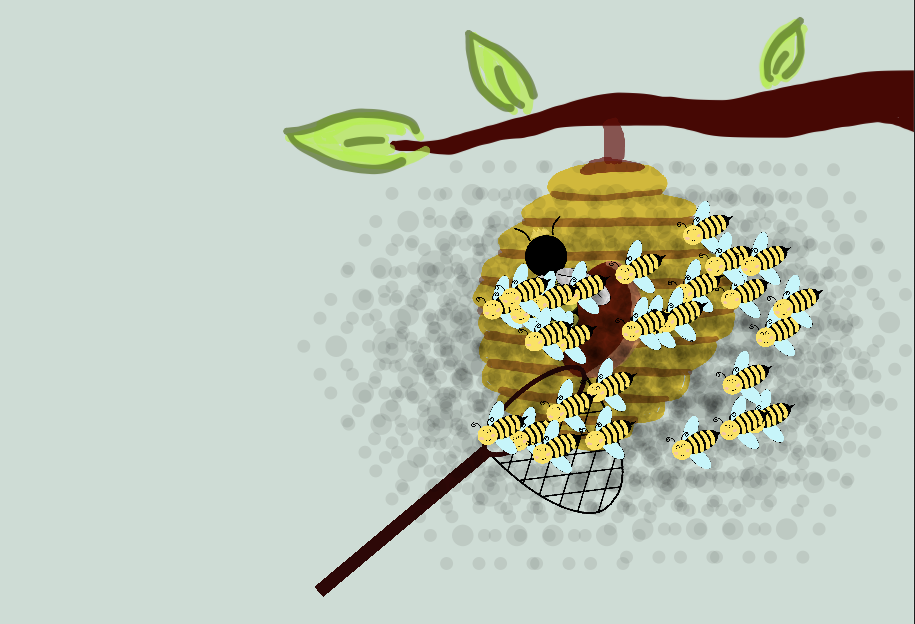
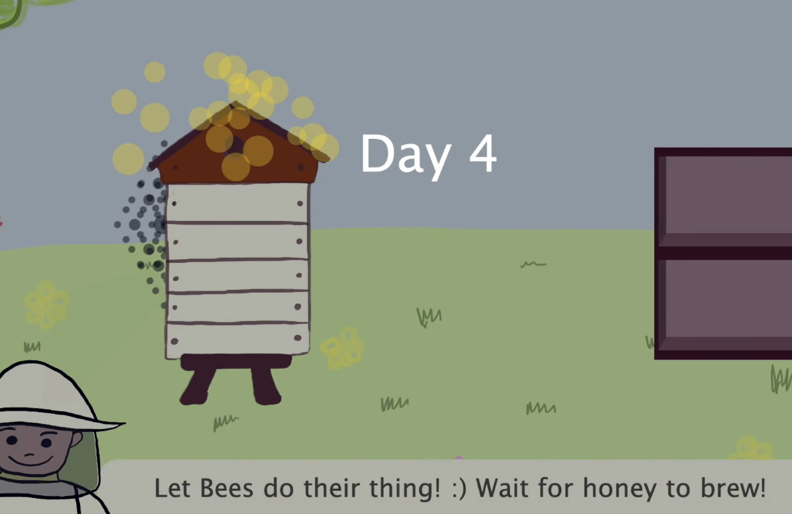

IAT 265 · Multimedia Programming for Design
Honey Harvest Simulation
14+
Classes
7
States
Solo
Project
4 wks
Timeline
July – August 2025
Role: Programmer & Visual Designer
Tools: Java, Java Swing, Graphics2D, Figma, Sketch.io
What is it?
A goal-driven interactive simulation built for IAT 265: Multimedia Programming for Design.
The project combines object-oriented programming, animation, mouse interaction, sound, and
generative effects to create a playful honey-harvesting experience.
In the simulation, the player captures a queen bee using a draggable net, places her into a hive box,
waits while honey brews, and then collects it using a jar. I designed the full experience myself,
including the assets, interaction flow, and implementation.
The Process
Phase 1
Concept & Planning


I mapped the full interaction loop before writing a line of code: intro, hive opening, queen
capture, brewing, honey collection, and restart. Each stage had to unlock the next in a way
that felt guided rather than arbitrary. Identifying the main classes and state transitions
early made the final system much easier to build and debug.
Phase 2
Asset Design


Unlike some of my earlier projects, I created the visuals for this simulation myself from scratch using
Figma and Sketch.io. This included the queen bee, worker bees, hive box, honey jar, net, start screen,
and supporting interface elements.
Designing the assets myself gave the project a more personal and cohesive visual identity, and it made
implementation easier because I could control the look, scale, and function of each element.
Phase 3
Core Development


The project was built in Java using Swing and Graphics2D, with separate classes managing the bee system,
interactive objects, interface buttons, visual effects, and the main simulation panel. I used a state-based
structure to control the flow from the intro screen through to the ending screen.
Key systems I implemented:
- 7 simulation states managed in
HoneyPanel via a Swing Timer at 30ms intervals
- 17 Java files across 4 packages:
main, garden, Effects, Buttons
- Abstract
BaseButton class extended by HiveBox, Net, HoneyJar, BeeNest, StartButton, and RestartButton
WorkerBee extends Bee, both using 2-frame image-sequence wing animation- Bounding box collision via
Rectangle2D.intersects() for net catching the queen
- 8 separate Minim audio files for music, sound effects, and transitions
- Full
restartGame() method resetting all object positions, states, and audio
Phase 4
Generative Effects & Testing


The swarm effect uses a recursive fractal algorithm. Each call draws a translucent ellipse then
branches into 6 children at depth 4, creating an organic burst pattern around the queen bee.
Getting the depth, radius decay, and transparency right took significant iteration before it
felt expressive rather than chaotic.
The brewing effect uses Perlin noise via Processing's PApplet to drive 25 golden
blobs rising from the hive over 30 seconds. A sine wave overlay simulates a day and night
cycle during the wait, giving the brewing stage a sense of time passing rather than just a
loading screen.
Problems & Reflection
Problem
The bee swarm effect was the hardest feature to design and control.
I wanted the swarm to feel expressive and organic, but recursion was one of the most difficult concepts
to translate into a visual effect. It took multiple rounds of experimentation to make the burst readable
without becoming too chaotic. I worked through this by revisiting lecture and lab materials, asking my TA
and professor for feedback, and refining the depth, spacing, and scale of the recursive pattern.
Problem
The brewing stage needed to feel active, not like a waiting screen.
A static delay would have made the experience feel flat, so I designed a golden brewing effect that grows
over time and paired it with visual transitions and sound. This made the wait feel intentional and helped
turn the brewing stage into one of the most memorable parts of the simulation.
Feedback
Designing all assets myself was flagged as a strength.
The professor and TA noted that creating original assets in Figma and Sketch.io gave the
simulation a cohesive and polished identity that stood out. This was a direct contrast to
my earlier Aladdin project, where I relied more on external sources. The feedback confirmed
that the visual and technical work supported each other in a way that felt intentional.
What I Learned
Feedback, iteration, and experimentation made the hardest parts manageable.
This project strengthened both my programming and design confidence. I learned how to structure a multi-state
simulation, manage drag-based interactions, and integrate generative techniques into a larger user experience.
More importantly, it showed me that challenging concepts like recursion become much easier when I break them
down, seek feedback, and keep iterating.